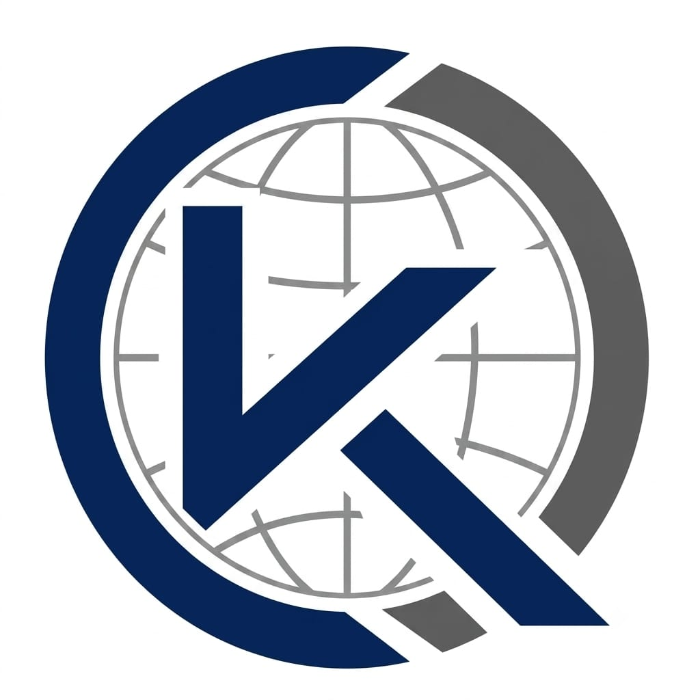

Lead-Generierung
Eine gute Ansprache beginnt mit den richtigen Unternehmen und relevanten Ansprechpartnern.
- Zielkundenprofil & Marktsegmentierung
- Unternehmens- und Kontaktrecherche
- Strukturierte Übergabe für Ihren Vertrieb
B2B-Akquise. Persönlich betreut.
Sie haben ein gutes Angebot. Wir helfen Ihnen, die passenden Unternehmen zu erreichen – mit gezielter Recherche, durchdachter Ansprache und einem klaren Vertriebsprozess.
Unverbindliche Anfrage · Individuell abgestimmter Umfang
Zielkundenprofil, Recherche, Ansprechpartner
Ihr Angebot. Verständlich auf den Punkt.
Bedarf einordnen. Nächsten Schritt abstimmen.
Unsere Leistungen
Einzelne Bausteine oder ein abgestimmtes Akquise-Projekt: Wir setzen dort an, wo Ihr Vertrieb Unterstützung braucht.
Eine gute Ansprache beginnt mit den richtigen Unternehmen und relevanten Ansprechpartnern.
Aus einem relevanten Erstkontakt soll ein Gespräch entstehen, das zu Ihrem Angebot passt.
Nachrichten, die einen klaren Anlass haben und Ihre Kundenbeziehungen weiterentwickeln.
So arbeiten wir zusammen
Vom ersten Briefing bis zur Übergabe bleibt Ihr Projekt nachvollziehbar. Umfang, Zuständigkeiten und Kriterien für einen geeigneten Kontakt stimmen wir vor dem Start mit Ihnen ab.
Wir besprechen Ihr Angebot, Ihre Wunschkunden, den Zielmarkt und die vorhandenen Vertriebsprozesse.
Sie erhalten ein individuelles Angebot mit Leistungen, Budget, Verantwortlichkeiten und Projektzeitraum.
Nach Ihrer Freigabe erfolgt die Umsetzung durch uns oder passende Projektpartner. Kontaktwege und Datenbasis werden zuvor abgestimmt.
Sie erhalten die vereinbarten Kontaktinformationen, Gesprächsnotizen oder Termine und eine verständliche Projektauswertung.
Wann wir zusammenpassen
Sie möchten wissen, welche Unternehmen zu Ihrem Angebot passen und wie eine relevante Ansprache aussehen kann.
Ihr Team soll sich stärker auf Beratung, Angebote und Abschlüsse konzentrieren können.
Sie möchten Umfang, Vorgehen und Auswertung zunächst in einem überschaubaren Pilotprojekt abstimmen.

KUNZ GLOBALDie Marke hinter Kunz Akquise ↗Persönlich verbunden
Kunz Akquise ist der auf Neukundengewinnung und Vertriebsunterstützung ausgerichtete Geschäftsbereich von Kunz Global.
Ich bin Stanley Kunz und Ihr Ansprechpartner für Anfrage, Angebot und Projektabstimmung. Je nach Aufgabenstellung erfolgt die Umsetzung durch mich oder beauftragte Projektpartner. Wer welche Leistung übernimmt, halten wir im Angebot fest.
Stanley Kunz
Inhaber · Kunz Global / Kunz AkquiseGut zu wissen
Damit Sie vor dem ersten Gespräch wissen, worauf es bei einer Zusammenarbeit ankommt.
Der Umfang richtet sich nach Ihrem Bedarf und den verfügbaren Projektkapazitäten. Möglich sind einzelne Leistungen wie Recherche und Texte oder eine abgestimmte Kombination mit Ansprache und Terminvereinbarung. Die Umsetzung und beteiligte Partner werden im Angebot benannt.
Sie erhalten ein individuelles Angebot. Entscheidend sind Zielmarkt, Rechercheaufwand, Kontaktkanäle, Projektumfang und die vereinbarte Auswertung. Leistungen und Vergütung werden vor Projektbeginn schriftlich festgehalten.
Nein. Abschlüsse hängen auch von Ihrem Angebot, Markt und Folgeprozess ab. Wir vereinbaren konkrete Leistungen und nachvollziehbare Kriterien, etwa für Zielkontakte oder qualifizierte Termine. Eine Rechercheadresse ist dabei noch kein interessierter Lead.
Vor dem Start werden Datenherkunft, Empfängergruppe und zulässige Kontaktwege geklärt. E-Mail-Marketing setzt eine passende Einwilligung oder eine im Einzelfall einschlägige gesetzliche Ausnahme voraus. Eine öffentlich auffindbare Adresse allein gilt nicht als Freigabe für Werbung.
Beschreiben Sie uns Ihr Angebot, Ihre Zielgruppe und Ihren Unterstützungsbedarf. Im Anschluss klären wir die Machbarkeit und erstellen bei passendem Umfang ein Angebot. Ihre Anfrage löst noch keinen kostenpflichtigen Auftrag aus.
Der erste Schritt
Was verkaufen Sie, wen möchten Sie erreichen und wo brauchen Sie Unterstützung? Ein paar Sätze reichen für den Anfang.